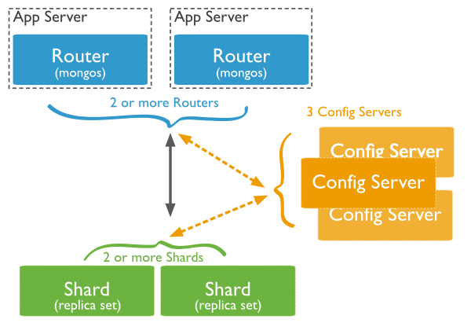

What is Sharding?
Storing data across multiple nodes/machines.
A single machine may run out of storage or have bottlenecked reads and writes
Sharding is horizontally scalable - Add machines as demand increases.
Database Issues
High throughput and large amounts data put a lot of stress on a single server.
Set sizes larger than RAM stress I/O capacity
High query rates can exhuast CPU capacity of a single server.
Two Solutions
- Vertical Scaling:
- Add more CPU and storage resources to a single server
- Limitations: Expensive.
- Sharding (Horizontal Scaling):
- Distribute data set over multiple servers or shards
- Each shard is an independent db and all together they make up a single logical db.
Sharded Collection

Sharding in MongoDB

Data Partitioning
Sharding happens on a collection level.
Sharding divides a collection's data by a shard key
Two types of partitioning: range based and hash based
Ranged Based Paritioning

Hash Based Paritioning

Fire Up Config Server
Download Mongo here
mkdir /data/configdb
mongod --configsvr --dbpath /data/configdb
- data/configdb where server metadata will be stored
- In production, run configsvr on three different hosts
Setup Mongos - Routing Service
mongos --configdb localhost:27019 --port 27017
- Lightweight, do not require data directories
- Usually have two of these in production
Create DBs for Shards
mkdir /data/shard1
mongod --dbpath /data/shard1 --port 27018 --shardsvr
- Distributed collection of items
- Can be stored in the volatile memory or in a persistent storage
RDDs

- Reading and writing happens too often for each Map Reduce (MR)
RDDs

- Transformations from one to another are through memory and doesn't touch the disk (except for RDD2)
- When the memory runs out, it is usually moved over to persistent storage.
RDD Transformations
val linesWithSpark = textFile.filter(line => line.contains("Spark"))
linesWithSpark: spark.RDD[String] = spark.FilteredRDD@7dd4af09
Caching
Cluster-wide in-memory cache
Useful for when data is accessed repeatedly (i.e. iterative algorithms or re-querying a small dataset)
Caching Example
scala> linesWithSpark.cache()
res7: spark.RDD[String] = spark.FilteredRDD@17e51082
scala> linesWithSpark.count()
res8: Long = 15
Who uses spark?
- SK Telecom - Analyze mobile usage patterns
- Freeman Lab - analyzing/visualizing patterns in large scale recordings of brain acitivty
- Yandex - Using spark to process islands identified from a search robot